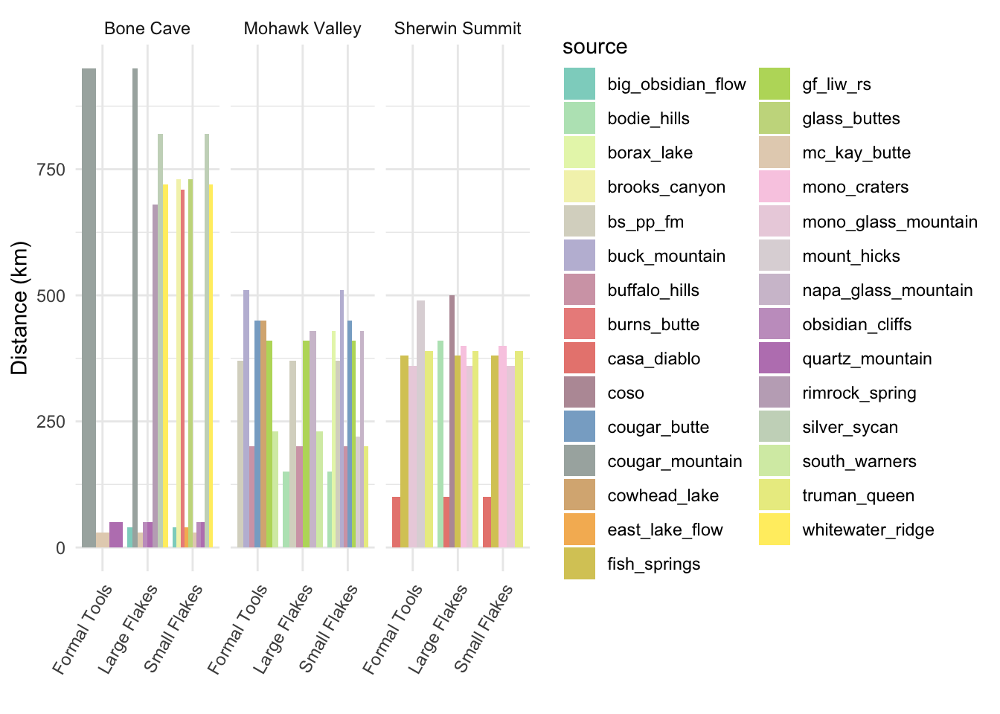

5 The payoff
Now that we have the Eerkens et al. 2007 data cleaned and in the form that we’d like, what do we want to do with it? For starters, let’s admire our combined data table…then we’ll compare the diversity of sources for each artifact class across the different sites.
eerk_comb %>% kable() %>% kable_classic(bootstrap_options = c("condensed")) %>%
scroll_box(width = "800px")| site | source_artifact | casa_diablo | mono_glass_mountain | truman_queen | fish_springs | mono_craters | bodie_hills | mount_hicks | coso | buffalo_hills | south_warners | bs_pp_fm | gf_liw_rs | cowhead_lake | cougar_butte | buck_mountain | napa_glass_mountain | borax_lake | obsidian_cliffs | mc_kay_butte | big_obsidian_flow | east_lake_flow | quartz_mountain | cougar_mountain | silver_sycan | brooks_canyon | glass_buttes | burns_butte | rimrock_spring | whitewater_ridge | sources_represented |
|---|---|---|---|---|---|---|---|---|---|---|---|---|---|---|---|---|---|---|---|---|---|---|---|---|---|---|---|---|---|---|---|
| Sherwin Summit | Formal Tools | 51 | 16 | 13 | 5 | NA | NA | 2 | NA | NA | NA | NA | NA | NA | NA | NA | NA | NA | NA | NA | NA | NA | NA | NA | NA | NA | NA | NA | NA | NA | 5 |
| Sherwin Summit | Large Flakes | 166 | 65 | 10 | 18 | 1 | 1 | NA | 1 | NA | NA | NA | NA | NA | NA | NA | NA | NA | NA | NA | NA | NA | NA | NA | NA | NA | NA | NA | NA | NA | 7 |
| Sherwin Summit | Small Non-pressure Flakes | 24 | 10 | 2 | 1 | 1 | NA | NA | NA | NA | NA | NA | NA | NA | NA | NA | NA | NA | NA | NA | NA | NA | NA | NA | NA | NA | NA | NA | NA | NA | 5 |
| Sherwin Summit | Small Pressure Flakes | 7 | 3 | 7 | 1 | 1 | NA | NA | NA | NA | NA | NA | NA | NA | NA | NA | NA | NA | NA | NA | NA | NA | NA | NA | NA | NA | NA | NA | NA | NA | 5 |
| Mohawk Valley | Formal Tools | NA | NA | NA | NA | NA | NA | NA | NA | 1 | 3 | 4 | 3 | 1 | 1 | 1 | NA | NA | NA | NA | NA | NA | NA | NA | NA | NA | NA | NA | NA | NA | 7 |
| Mohawk Valley | Large Flakes | NA | NA | NA | NA | NA | 2 | NA | NA | 4 | 13 | 12 | 5 | NA | NA | NA | 1 | NA | NA | NA | NA | NA | NA | NA | NA | NA | NA | NA | NA | NA | 6 |
| Mohawk Valley | Small Flakes | NA | NA | 1 | NA | NA | 6 | 3 | NA | 14 | NA | 8 | 2 | NA | 3 | 1 | 8 | 2 | NA | NA | NA | NA | NA | NA | NA | NA | NA | NA | NA | NA | 10 |
| Bone Cave | Formal Tools | NA | NA | NA | NA | NA | NA | NA | NA | NA | NA | NA | NA | NA | NA | NA | NA | NA | NA | 3 | NA | NA | 1 | 1 | NA | NA | NA | NA | NA | NA | 3 |
| Bone Cave | Large Flakes | NA | NA | NA | NA | NA | NA | NA | NA | NA | NA | NA | NA | NA | NA | NA | NA | NA | 23 | 64 | 67 | NA | 14 | 1 | 15 | NA | NA | NA | 1 | 2 | 8 |
| Bone Cave | Small Flakes | NA | NA | NA | NA | NA | NA | NA | NA | NA | NA | NA | NA | NA | NA | NA | NA | NA | 7 | 20 | 8 | 6 | 6 | NA | 2 | 3 | 3 | 2 | NA | 1 | 10 |
5.1 Visualizing the data
The tidyverse is a pretty prescriptive place (there are definitely right and wrong ways to do things), and tidynerds prefer to do their data visualization using ggplot rather than Base R. Since we’ve been immersed in dplyr here, we’ll plot that way as well. A few general rules about ggplot:
- If you only have a little knowledge of both base R and ggplot, it’s easier to produce elegant plots with ggplot…but harder to control them. If you know both reasonably well, you can produce elegant plots with either; for complex plots I usually turn to ggplot.
- ggplot often demands significant data preparation beforehand so that the data are in the format that ggplot expects (long rather than wide). If you’re not conversant with dplyr this will be maddening. Base R can much more easily be coaxed to plot in ways that work with existing data.
- A corollary is that manipulating a gplot plot is as likely to involve manipulating the data being plotted as it is to involve manipulating the plot directly.
- ggplot (like the tidyverse in general) tends to be pretty prescriptive. As with any template, it’s a good idea to think about what you want, and how well the template matches your desires, rather than just assuming that it’s a) right, and b) smarter than you are.
You can of course consult the full ggplot manual.
library(ggplot2)
library(ggstats)
library(RColorBrewer)
eerk_comb_long <- eerk_comb %>%
pivot_longer(cols = !c(site, source_artifact, sources_represented),
names_to = "Source",
values_to = "Count") %>%
mutate(Count = case_when( #replace NAs with 0s
is.na(Count) == T ~ 0,
.default = Count
))
#how many colors do we need?
unique(eerk_comb_long$Source)## [1] "casa_diablo" "mono_glass_mountain" "truman_queen"
## [4] "fish_springs" "mono_craters" "bodie_hills"
## [7] "mount_hicks" "coso" "buffalo_hills"
## [10] "south_warners" "bs_pp_fm" "gf_liw_rs"
## [13] "cowhead_lake" "cougar_butte" "buck_mountain"
## [16] "napa_glass_mountain" "borax_lake" "obsidian_cliffs"
## [19] "mc_kay_butte" "big_obsidian_flow" "east_lake_flow"
## [22] "quartz_mountain" "cougar_mountain" "silver_sycan"
## [25] "brooks_canyon" "glass_buttes" "burns_butte"
## [28] "rimrock_spring" "whitewater_ridge"eerk_comb_long %>% ggplot() +
geom_bar(aes(x = source_artifact, fill = Source, weight = Count)) +
scale_fill_manual(values = mypalette) +
theme_minimal() +
facet_wrap(vars(site)) +
guides(x = guide_axis(angle = 60)) +
labs(x = "")Since we’re interested in diversity, proportions are probably going to be more useful than counts.
eerk_comb_long %>% ggplot() +
aes(x = source_artifact, fill = Source,
weight = Count, by = source_artifact) +
scale_fill_manual(values = mypalette) +
geom_bar(position = "fill") +
theme_minimal() +
facet_wrap(vars(site)) +
guides(x = guide_axis(angle = 60)) +
labs(x = "", y = "Proportion") 
If we wanted to make our categories more strictly comparable, we could recode ‘Small non-pressure flakes’ and ‘Small pressure flakes’ from Sherwin Summit to produce a ‘Small flakes’ category (using case_when() again).
#first recode
eerk_comb_coll <- eerk_comb %>% mutate(source_artifact = case_when(
source_artifact == "Small Non-pressure Flakes" ~ "Small Flakes",
source_artifact == "Small Pressure Flakes" ~ "Small Flakes",
.default = source_artifact
))
#then collapse rows
eerk_comb_coll <- eerk_comb_coll %>% group_by(site, source_artifact) %>%
summarize(across(casa_diablo:whitewater_ridge, sum, na.rm = T),
sources_represented = mean(sources_represented))
#then pivot again
eerk_comb_coll_long <- eerk_comb_coll %>%
pivot_longer(cols = !c(site, source_artifact, sources_represented),
names_to = "Source",
values_to = "Count") %>%
mutate(Count = case_when( #replace NAs with 0s
is.na(Count) == T ~ 0,
.default = Count
))And make a new plot.
5.1.1 Source proportions plotted by artifact type and site
eerk_comb_coll_long %>% ggplot() +
aes(x = source_artifact, fill = Source,
weight = Count, by = source_artifact) +
scale_fill_manual(values = mypalette) +
geom_bar(position = "fill") +
theme_minimal() +
facet_wrap(vars(site)) +
guides(x = guide_axis(angle = 60)) +
labs(x = "", y = "Proportion",
title = "Obsidian source representation by artifact type") We might also consider - as Eerkens and colleagues do - how sources represented relate to distance.
obsid_dist_l <- obsid_dist %>%
pivot_longer(-site, names_to = "source", values_to = "distance") %>%
filter(is.na(distance) == F)
obsid_dist_l %>% ggplot() +
geom_bar(aes(x = site, fill = source, y = distance),
position = "dodge", stat = "identity") +
scale_fill_manual(values = mypalette) +
theme_minimal() +
labs(x = "", y = "Distance (km)")There are some interesting contrasts apparent that might provide us some good food-for-thought. What if we want to look both at distances-by-site and distances-by-type?
#add distances to our long data
eerk_comb_long_dist <- eerk_comb_coll_long %>% rename(source = Source) %>%
select(-sources_represented) %>% left_join(obsid_dist_l, by = c("site", "source")) %>%
filter(Count > 0)
#then plot, using `facet_wrap()`
eerk_comb_long_dist %>% ggplot() +
geom_col(aes(x = source_artifact, y = distance, fill = source),
position = "dodge") +
scale_fill_manual(values = mypalette) +
theme_minimal() +
labs(x = "", y = "Distance (km)", ) +
facet_wrap(vars(site)) +
guides(x = guide_axis(angle = 60)) 
#the bar widths are proportional to the number of sources in that group...
#and - because ggplot - can't be changed in any obvious way ## `summarise()` has grouped output by 'site'. You can override using the
## `.groups` argument.5.2 Next steps after exploratory visualization
Generally the point of data visualization is to give you some idea about patterns or relationships in the data that you might explore further. In this case, we’ve been considering source diversity across artifact types at three different sites, and considering Eerkens and colleagues’ test of a behavioral model with the expectation that source diversity should be higher for small flakes.
5.2.1 Diversity indices
We can examine diversity numerically as well as visually. The Shannon index is one of several tools used for quantifying the diversity of a sample by building on how many varieties there are and what proportion of the total each represents. A maximally rich sample is one with lots of varieties where each comprises a relatively high proportion of of the population.
library(vegan)
eerk_comb_long %>% filter(Count > 0) %>% group_by(site, source_artifact) %>%
summarize(shannon_index = diversity(Count))## # A tibble: 10 × 3
## # Groups: site [3]
## site source_artifact shannon_index
## <chr> <chr> <dbl>
## 1 Bone Cave Formal Tools 0.950
## 2 Bone Cave Large Flakes 1.49
## 3 Bone Cave Small Flakes 1.97
## 4 Mohawk Valley Formal Tools 1.77
## 5 Mohawk Valley Large Flakes 1.50
## 6 Mohawk Valley Small Flakes 1.99
## 7 Sherwin Summit Formal Tools 1.16
## 8 Sherwin Summit Large Flakes 1.01
## 9 Sherwin Summit Small Non-pressure Flakes 0.988
## 10 Sherwin Summit Small Pressure Flakes 1.34# note that values are different than those published by Eerkens et al
# but relative relationships the sameHow do these values compare to your assessment of the plot we created above?